ChipboxMANUAL
1The main views
HOME flips between the main views.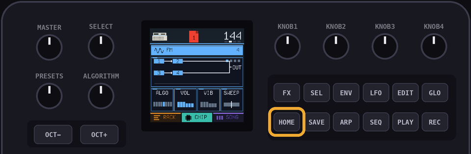
RACK shows the channels of the current page.CHIP allows you to edit the patch of the chip being used in the selected channel.SONG is the order your pages play in.The top bar shows the console of the current channel, the page you're on, the note under the cursor and the tempo.
Hold
HOME to open the project view.Press
GLO to open the manual at the chapter for the view you're on.GLO + HOME opens the menu.SEQ opens step entry for a channel (or the drum lanes).FX is used for punch-in effects.HOME will always 'go back' when you're in a submenu.2The manual, tips and the menu
Press
GLO to open the manual. It opens at the page for what you're doing: the rack, the chip screen, the song, step entry, drums or effects.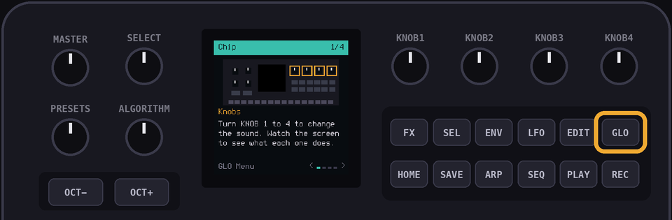
Turn
SELECT to flip through the pages. Turn PRESETS to jump to another chapter.Press
GLO again to see the contents. Turn SELECT to pick a chapter and press OCT+ to open it.Press
HOME to close the manual.A new FM-1 starts on the Quick Start: a few pages on the manual, the project browser and where to find the full manual online. Press
HOME to close it.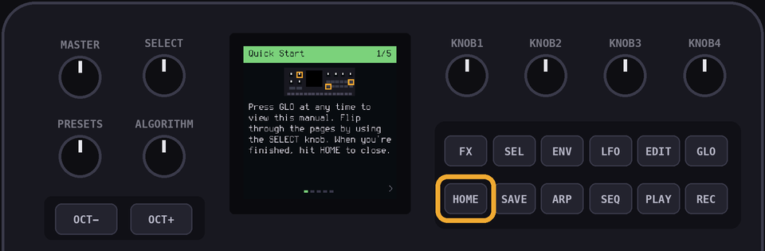
If nothing has been touched for five minutes and nothing is playing, a tip pops up. It changes every twenty seconds. Touch anything, or press
HOME, to close it.Press
GLO and HOME together to open the menu.| Menu item | What it does |
|---|---|
| Quick Start Always | Shows the Quick Start every time you switch on. Off by default. |
| Projects At Start | Opens the project browser every time you switch on, so you can open a project or start a new one. Off by default. |
| Show Tips | Turns the tips on or off. On by default. |
| Factory Reset | Deletes all your projects. The demos stay. |
Press
OCT+ to change a menu item. Press HOME to close the menu.3Channels
A channel is one voice of one chip.
You can have up to 16 channels, in any mix.
Select the + row at the bottom of the rack with
PRESETS, then press OCT+ to add a channel.
Choose a console, then a channel.
OCT- goes back a step.Play the keys and the console on the bar answers, so you can hear it before you add it.
KNOB1 groups the consoles by type, year, maker or country.
Leave a console for five seconds and notes about it scroll up the bottom of the screen.
SEL opens a card for the console: a bigger picture, its year and maker. SELECT turns to the next one.PRESETS selects the channel in the RACK, CHIP and STEP views.Hold
EDIT on a channel to remove it.Hold
SEL on a channel to copy it. You can copy the patch only, or the patch and the notes.| Console | Channels | Documentation |
|---|---|---|
| NES | Pulse, Triangle, Drums | APU, APU mixer (NESdev wiki) |
| Game Boy | Pulse, Wave, Drums | Audio (Pan Docs) |
| Master System | Tone, Drums | SN76489 (SMS Power!) |
| PC Engine | Wave, Drums | PC Engine (Furnace manual) |
| Atari 2600 | Sound, Drums | TIA hardware notes (Andrew Towers) |
| Konami VRC6 | Pulse, Saw, Drums | VRC6 audio (NESdev wiki) |
| AY-3-8910 | Tone, Drums | AY-3-8910 (Wikipedia) |
| Mega Drive | FM, Drums | Mega Drive audio (Sonic Retro), YM2612 (Wikipedia) |
| Virtual Boy | Wave, Drums | Virtual Boy (Furnace manual) |
| Atari 8-bit | Sound, Drums | POKEY (Furnace manual), POKEY (Wikipedia) |
| PC Speaker | Beeper, Drums | PC speaker (Furnace manual), PC speaker (Wikipedia) |
| AdLib | FM, Drums | OPL (Furnace manual) |
| Namco WSG | Wave, Drums | Namco WSG (Furnace manual) |
| Namco 163 | Wave, Drums | Namco 163 audio (NESdev wiki) |
| Sunsoft 5B | Tone, Drums | Sunsoft 5B audio (NESdev wiki) |
| NES MMC5 | Pulse, Drums | MMC5 audio (NESdev wiki) |
| Famicom Disk | Wave, Drums | FDS audio (NESdev wiki) |
| Konami SCC | Wave, Drums | SCC (Furnace manual) |
| MSX Music | FM, Drums | OPLL (Furnace manual) |
| Konami VRC7 | FM, Drums | VRC7 audio (NESdev wiki) |
| Arcade FM | FM, Drums | YM2151 (Furnace manual) |
| Sound Blaster | FM, Drums | OPL (Furnace manual) |
| WonderSwan | Wave, Drums | WonderSwan (Furnace manual) |
| Sam Coupe | Tone, Drums | SAA1099 (Furnace manual) |
| VIC-20 | Tone, Drums | VIC-20 (Furnace manual) |
| Plus/4 | Tone, Drums | TED (Furnace manual) |
| Atari Lynx | Sound, Drums | Lynx (Furnace manual) |
| PC-98 | FM, SSG, Drums | YM2608 (Furnace manual) |
| Neo Geo | FM, SSG, Drums | YM2610 (Furnace manual) |
| Neo Geo Pocket | Tone, Drums | T6W28 (Furnace manual) |
| MSX-Audio | FM, Drums | Y8950 (Wikipedia), OPL (Furnace manual) |
| Yamaha TX81Z | FM, Drums | OPZ (Furnace manual) |
| SN76477 | Sound, Drums | SN76477 (Wikipedia) |
| Namco System 1 | Wave, Drums | Namco (Furnace manual) |
| Korg Poly-800 | Organ, Drums | MSM5232 (Furnace manual), Korg Poly-800 (Wikipedia) |
| ZX Spectrum | Beeper, Drums | ZX Spectrum (Wikipedia) |
| NEC PC-88 | FM, SSG, Drums | YM2203 (Furnace manual) |
| Commodore 64 | Voice, Drums | SID (C64-Wiki), reSID (Dag Lem) |
The drum kits also borrow from the Game Boy sound hardware page (its noise modes) and the YM2413 notes in the Furnace manual (the Master System kit's cymbals).
4The rack
Each row is a channel.
A page is 16 steps, which is one bar.
KNOB 1 sets the tempo, from 40 to 240 bpm.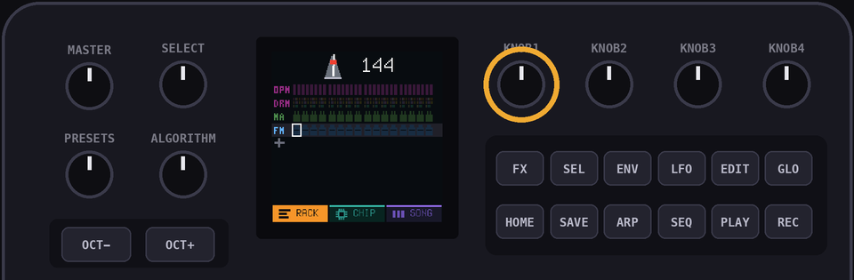
ALGORITHM flips through the pages.PLAY plays the song from the current page.Hold
PLAY to loop just the current page.SELECT is the tape dial. Turn it right to play (half speed, normal speed or double speed) or left to play backwards. The middle position pauses.While the tape is stopped,
SELECT moves the cursor.While the tape is stopped, a key writes its note on the cursor's step. Press the same key again to remove it.
OCT- and OCT+ move the keys down or up an octave, by up to two octaves.ARP shows or hides note tails, the line under a long note.5Writing notes
There are three ways to write notes. You can mix them.
Step entry
SEQ opens the current page as 16 blocks.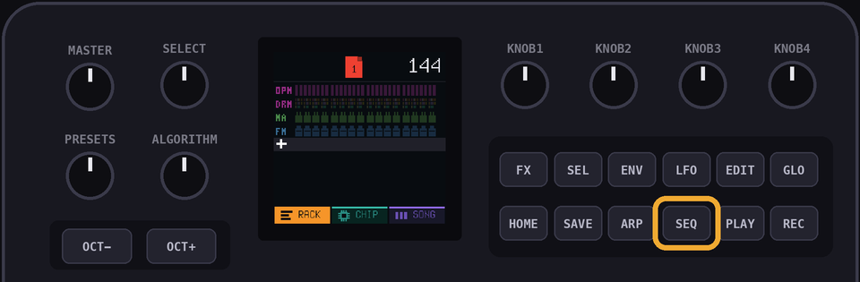
A key sets the block under the cursor and moves to the next one.
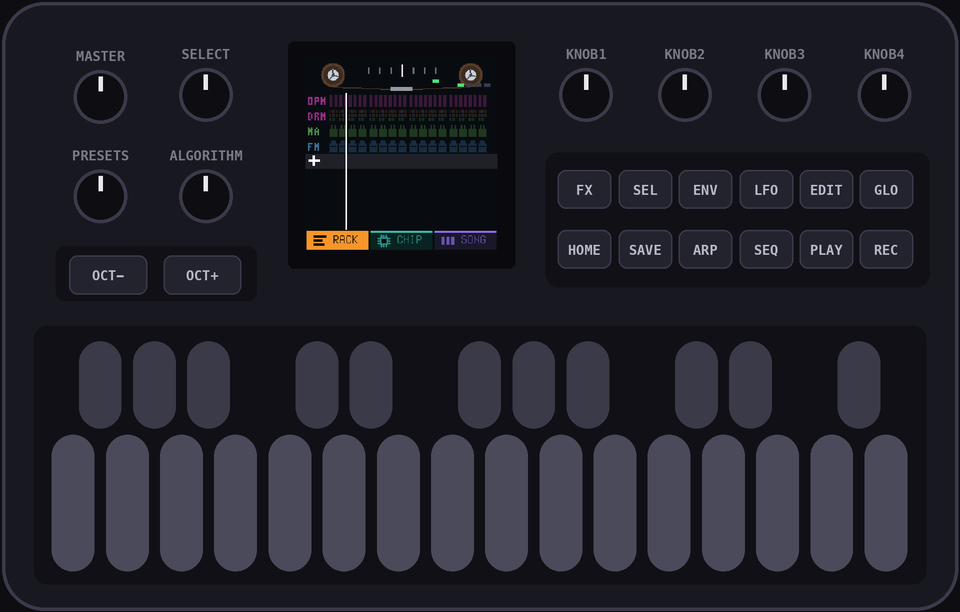
SELECT moves the cursor, so you can leave rests.EDIT clears the block.KNOB 2 sets the length of a note, in steps. Turn it while you hold a key, or while the cursor is on a note.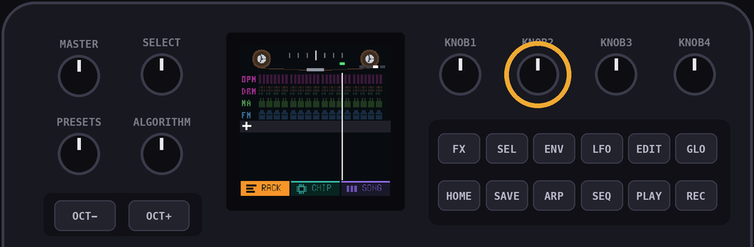
PLAY loops the page while you work.Recording
REC loops the page and starts recording.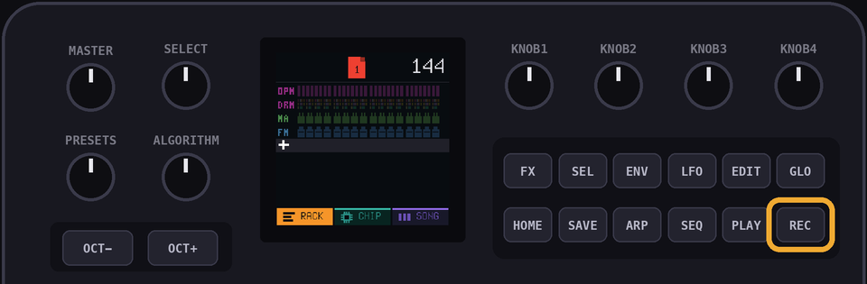
A key lands on the step nearest the playhead.
Hold a key to set the length of the note.
Hold
EDIT to erase notes as the playhead passes them.Turn
SELECT left once to record at half speed.Drums can't be recorded live. Use the drum lanes.
6The chip screen
CHIP shows the patch of the selected channel.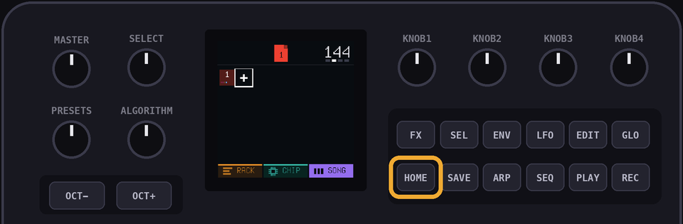
KNOB 1 to KNOB 4 change the four cards on screen.ALGORITHM flips between the pages of cards.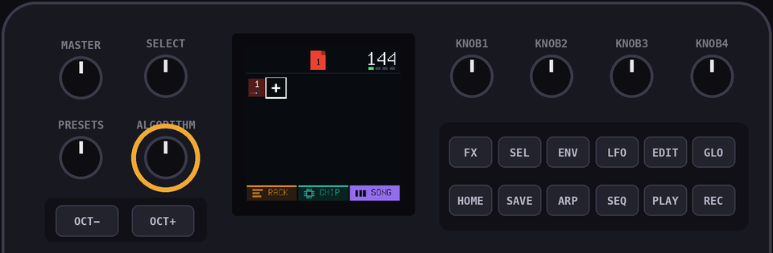
Page 1: the tone
| Card | What it does |
|---|---|
DUTY, WAVE, BUZZ, NOISE or ALGO | The first knob. It depends on the chip. See the consoles below. |
VOL | Sets the level of the channel. |
VIB | Sets the depth of the vibrato. |
SWEEP | Slides the pitch up or down while a note is held, by up to 15 semitones a second. |
PAN | Sets left, centre or right. Chips with stereo have PAN instead of SWEEP. |
Page 2: the envelope
ATK is how long the sound takes to rise.DEC is how long it takes to fall to SUS.SUS is the level it holds while the key is down.REL is how long it takes to fade out after you let go.Page 3: the arp
SHAPE picks the chord.The chords are octave, major, minor, major 7th, minor 7th, sus4, power and diminished.
RATE sets the speed.DIR is up, down, or up and down.Page 4: waves and FM
Channels with a wave have a fourth page:
SHAPE, FOLD, STEP and TWIST.SHAPE morphs between pulse, saw, triangle and sine.FOLD folds the wave back on itself, which makes it brighter.STEP reduces the number of levels, which crushes the wave.TWIST bends the wave sideways.The Mega Drive's fourth page is explained below.
7The consoles
| Console | Notes |
|---|---|
| NES | Pulse has four duties: 12.5, 25, 50 and 75 percent. Triangle has no volume knob. The output goes through the NES's own filters. |
| Game Boy | Pulse has four duties. Wave has four volume steps and stereo. The output goes through the Game Boy's high-pass filter. |
| Master System | Tone is a square wave with 16 volume levels. |
| PC Engine | Wave has 16 volume levels and stereo. |
| Atari 2600 | BUZZ picks one of eleven sound types, from clean tones to buzzes to white noise. |
| Konami VRC6 | Pulse has eight duties. Saw is a stepped saw wave, twice as loud as the pulse at the same volume. |
| AY-3-8910 | Tone is a square wave with 16 volume levels. NOISE 0 is tone only. 1 to 14 gate the tone with noise, a faster noise the higher you go. 15 is noise alone, which is useful for hats and snares. |
| Mega Drive | FM has four operators and eight algorithms, like Arcade FM, through the chip's grainy 9 bit output. See below. |
| Virtual Boy | Wave has 32 steps of 6 bits, which is finer than the Game Boy. It has stereo. Notes below about D2 play at the chip's lowest pitch. |
| Atari 8-bit | DIST picks one of eight distortions, from a clean tone through buzzes to noise. |
| PC Speaker | One square wave with no volume. Notes are a little out of tune, like the real timer. The sound goes through a small speaker's filter. |
| AdLib | FM has two operators, A and C. ALGO picks the pair. See below. |
| Namco WSG | Wave has 32 steps of 4 bits and 15 volume levels. The output goes through a low-pass filter. |
| Namco 163 | Wave works like the WSG. The chip shares one converter between its voices, so more channels playing at once sound grittier and quieter. |
| Sunsoft 5B | Tone and NOISE work like the AY-3-8910, with 3 dB volume steps. BUZZ runs the envelope at the pitch of the note: off, falling, rising or triangle. |
| NES MMC5 | Pulse works like the NES pulse: four duties and the NES's own mixer. There is no triangle. |
| Famicom Disk | Wave has 32 steps of 6 bits and goes through a low-pass filter. MOD sets how hard the chip's modulator bends the wave, from off to deep. |
| Konami SCC | Wave has 32 steps of 8 bits. Like all the chips with a divider, high notes land on the chip's steps and can be a little out of tune. |
| MSX Music | INST picks one of the chip's 15 built-in instruments and sets its envelope. You can still change the envelope after. See below. |
| Konami VRC7 | Works like MSX Music, with the VRC7's own 15 instruments. See below. |
| Arcade FM | FM has four operators, 1 to 4. ALGO picks one of eight ways to connect them. See below. It has stereo. |
| Sound Blaster | FM has four operators, 1 to 4. ALGO picks one of four connections. WAVE, the fourth knob, picks the wave shape. See below. |
| WonderSwan | Wave has 32 steps of 4 bits and stereo. The chip's output is sampled at 24 kHz, so it sounds crunchier than the Namco chips. Notes below about G1 play at the chip's lowest pitch. |
| Sam Coupe | Tone and NOISE work like the AY-3-8910, with linear volume and stereo. While the noise is high the tone is half as loud. |
| VIC-20 | The pitch is a 7 bit divide, so high notes are a little out of tune, like the real chip. NOISE 1 swaps the square wave for the noise voice. |
| Plus/4 | NOISE 1 swaps the square wave for noise. Notes below A2 play an octave higher, because the chip can't go lower. |
| Atari Lynx | TYPE 1 is a square wave. The rest run the chip's shift register with different taps: short ones sound like buzzy tones, long ones like noise. It has stereo. |
| PC-98 | FM works like Arcade FM, with stereo. SSG works like the AY-3-8910. |
| Neo Geo | The same as PC-98: FM with stereo, and an SSG like the AY-3-8910. |
| Neo Geo Pocket | Tone is a square wave with stereo. It works like the Master System's. |
| MSX-Audio | FM has two operators, A and C. ALGO picks FM or both playing. It has no wave choices, unlike the AdLib. |
| Yamaha TX81Z | FM has four operators and the eight Arcade FM algorithms. WAVE picks the shape of every operator: sine, sine squared, half sine, half sine squared, alternating sine, alternating sine squared, camel sine and camel sine squared. |
| SN76477 | MIX picks tone, tone with noise, noise, or siren. SLF swings the pitch up and down, from off to fast. The siren swings it twice as far. |
| Namco System 1 | Wave works like the WSG, with stereo. |
| Korg Poly-800 | An organ. FOOT turns four pitches on or off: 16' (an octave down), 8' (the note), 4' and 2' (one and two octaves up). QUINT adds a fifth above the note, or a fifth above the octave, or both. |
| ZX Spectrum | A pulse wave with no volume. DUTY sets how thin the pulse is. The speaker is one bit, so every voice shares it and chords crunch. |
| NEC PC-88 | FM works like Arcade FM, with one speaker. SSG works like the AY-3-8910. |
| Commodore 64 | One voice of the SID, with its own filter. It has five pages of knobs. See below. |
AdLib FM
ALGO 1: A modulates C. Both are sine waves.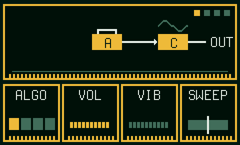
ALGO 2: C is a half sine.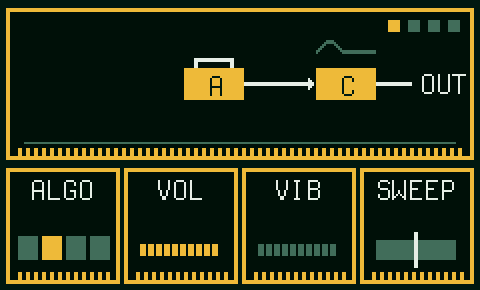
ALGO 3: C is an absolute sine.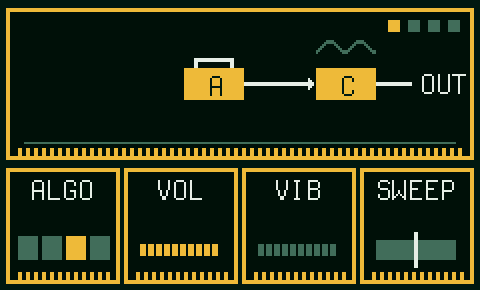
ALGO 4: A and C both play on their own.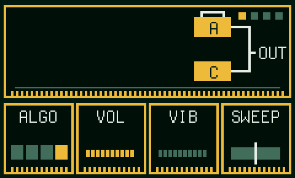
RATIO, INDEX, FB and DECAY work as under FM knobs.FM knobs
These work the same on every FM chip.
ALGO picks how the operators connect. The chip screen shows it: a box is an operator, a wire means the first modulates the second, and only the boxes wired to OUT are heard.RATIO sets how high operator 1 (the one with feedback) sits above the note, from half to 15 times.INDEX sets how hard the modulators push the sound. Each step is 3 dB, and the top is the chip's loudest setting.FB feeds operator 1 back into itself. Its level follows INDEX, as on the chips, so raise INDEX first.DECAY sets how fast INDEX dies away. Higher values sound plucked.Mega Drive FM
It has four operators and the same eight algorithms as Arcade FM.
The output goes through the chip's 9 bit converter, which adds a grainy edge to quiet notes.
MSX Music and Konami VRC7
INST 1 to 15 for MSX Music: Violin, Guitar, Piano, Flute, Clarinet, Oboe, Trumpet, Organ, Horn, Synth, Harpsichord, Vibraphone, Synth Bass, Acoustic Bass, Electric Guitar.
INST 1 to 15 for the VRC7: Buzzy Bell, Guitar, Wurly, Flute, Clarinet, Synth, Trumpet, Organ, Bells, Vibes, Vibraphone, Tutti Frutti, Fretless, Synth Bass, Sweep.
Arcade FM
ALGO picks how four operators connect. The chip screen shows it.1 has feedback, set by
FB. 3 sits an octave above the note, and 4 is a hair out of tune with 2, which thickens the sound.ALGO 1: 1, 2, 3 and 4 in a chain. Only 4 is heard.ALGO 2: 1 and 2 both modulate 3, which modulates 4.ALGO 3: 1 and 3 both modulate 4, and 2 modulates 3.ALGO 4: 1 modulates 2. 2 and 3 both modulate 4.ALGO 5: 1 modulates 2, and 3 modulates 4. 2 and 4 are heard.ALGO 6: 1 modulates 2, 3 and 4. All three are heard.ALGO 7: 1 modulates 2. 2, 3 and 4 are heard.ALGO 8: all four play on their own.The Mega Drive, PC-98, Neo Geo and TX81Z use the same eight algorithms.
RATIO, INDEX, FB and DECAY work as under FM knobs.Sound Blaster FM
ALGO 1: 1, 2, 3 and 4 in a chain. Only 4 is heard.ALGO 2: 1 plays on its own, and 2 modulates 3, which modulates 4.ALGO 3: 1 modulates 2, and 3 modulates 4. 2 and 4 play.ALGO 4: 1 and 4 play on their own. 2 modulates 3, which plays too.WAVE 1 to 8 shapes every operator: sine, half sine, absolute sine, pulse sine, alternating sine, camel sine, square and saw.RATIO, INDEX, FB and DECAY work as under FM knobs.Commodore 64 voice
WAVE picks triangle, saw, saw with triangle, pulse, pulse with triangle, pulse with saw, all three, or noise. The combined waves come from real chips. Some of them are silent at some pulse widths, like the real ones.CHIP picks a 6581 or an 8580. They differ in the combined waves and the filter.ATK, DEC, SUS and REL are the chip's own envelope, with the same times.Page 4: PW is the width of the pulse. PWM sweeps it back and forth, faster the higher you turn it.
SYNC makes a hidden second oscillator restart the voice. The higher the setting, the higher the voice sounds.
RING ring-modulates the voice with a hidden oscillator. Triangle sounds best.
Page 5: CUT and RES set the filter. MODE lights L, B and H for low, band and high pass, in any mix. FENV opens the cutoff with the envelope.
8Drums
Every console has its own drum kit.
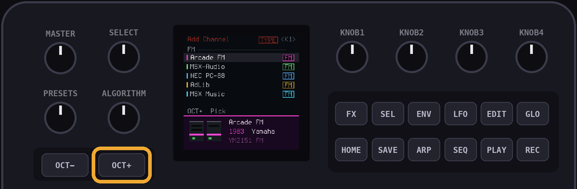
The drums are
BD (kick), SD (snare), LT, MT and HT (toms), RS (rimshot), CP (clap), CH (closed hat), OH (open hat), CR (crash) and RD (ride).SEQ opens the drum lanes, with one row per drum and 16 steps across.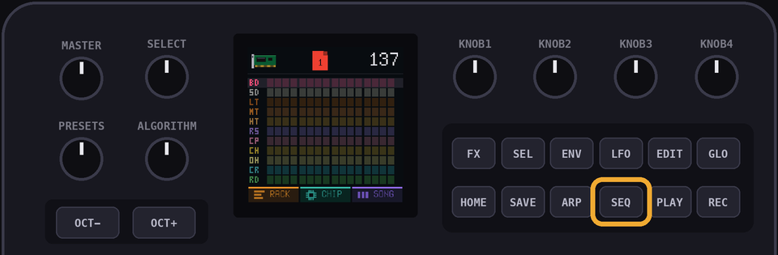
Use the black keys to change the drum in the kit.
The 16 white keys align to the 16 steps in the page.
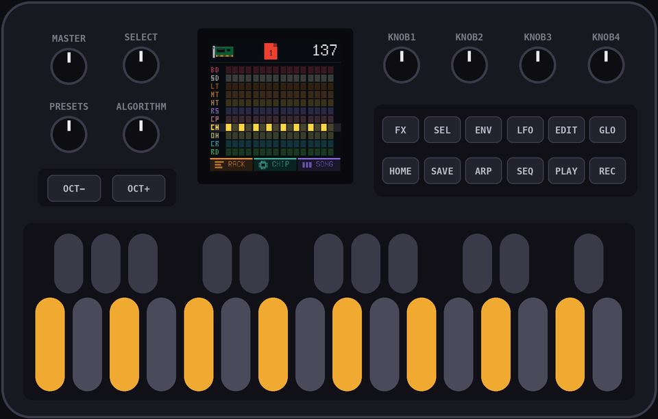
Hold
ENV while you press a white key to place an accent, a louder hit. On a hit that is already there, ENV switches the accent on or off.EDIT clears the picked drum on the current page.9The song
SONG shows a row of slots. Each slot holds a page.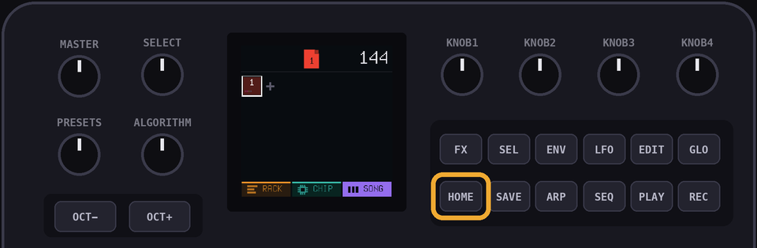
A page can be used in more than one slot.
SELECT moves the cursor.Use the
PRESETS knob to change the page used in the selected slot.OCT+ adds a slot after the current one, with a new empty page.OCT- removes the slot.Tap
EDIT to open the slot's page in the RACK.Hold
EDIT to copy the page. The copy replaces the page in this slot only.PLAY plays the song from the current slot.10Projects
Hold
HOME to open the project view. It has twelve tiles, each with a small picture of the first page.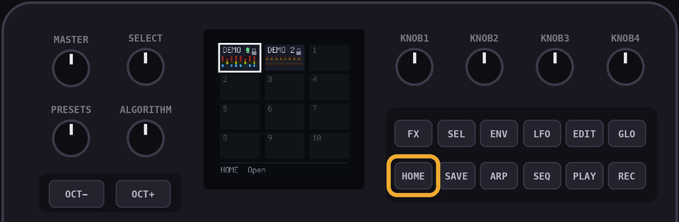
SELECT or PRESETS moves between tiles. OCT+ or HOME opens a tile. OCT- goes back.The first two tiles are the demos. They don't save changes, so copy one before you edit it.
Open an empty tile to start a new project.
Hold
SEL on a tile to copy that project into the first empty tile.Hold
EDIT on a tile to delete that project.Projects save automatically when nothing is playing. Hit
SAVE to force a save just in case.The
SAVE light glows while there are unsaved changes.Switch on Projects At Start in the menu (
GLO + HOME) to see this every time you switch on.Factory Reset in the menu (
GLO + HOME) deletes all your projects.11Undo
At any time, you can undo changes with the
LFO key.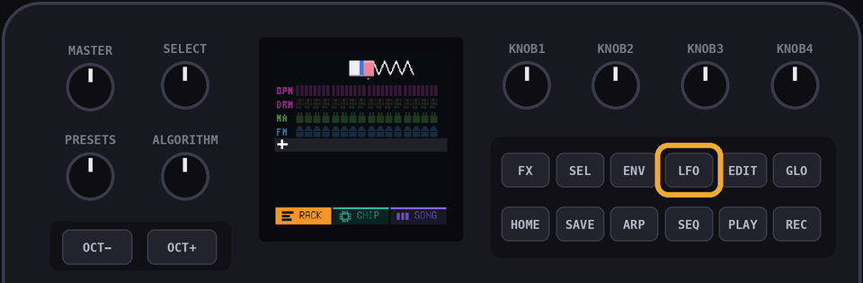
NOTE: you can't redo an undone change, so be careful!
12Effects
FX turns the 16 white keys into effects pads.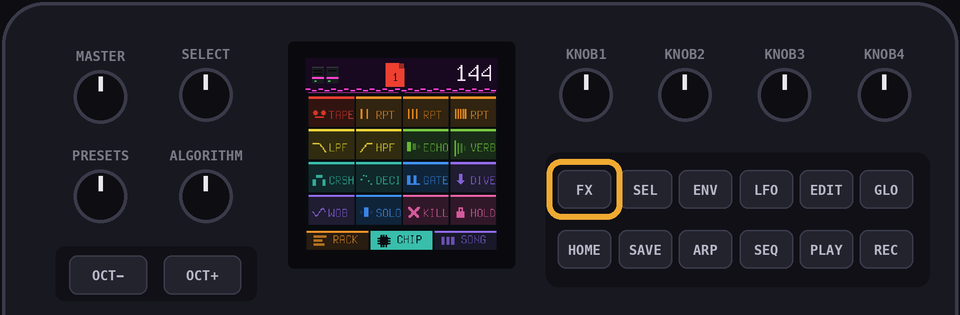
| Pad | What it does |
|---|---|
TAPE | Controls the tape with SELECT. |
RPT (three pads) | Repeats the current step every eighth, sixteenth or thirty-second note. |
LPF | Low-pass filter. |
HPF | High-pass filter. |
ECHO | Tape echo. |
VERB | Reverb. |
CRSH | Reduces the number of levels. |
DECI | Reduces the sample rate. |
GATE | Chops the sound every sixteenth note. |
DIVE | Drops the pitch an octave. |
WOB | Wobbles the pitch. |
SOLO | Plays only the selected channel. |
KILL | Silences everything. |
HOLD | Keeps pads on after you let go. |
13The numbers
| Channels | 16 |
| Steps in a page | 16 |
| Pages | 64 |
| Slots in a song | 128 |
| Projects | 10, and two demos |
| Undo | 6 changes |
| Notes in a project | About 2000 |
| Tempo | 40 to 240 bpm |
14Updates and rescue
Install and update firmware with the install page.
If your FM-1 gets bricked or stuck in a weird place, hold
OCT- while plugging it in. The install page will fix it from there.